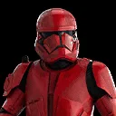
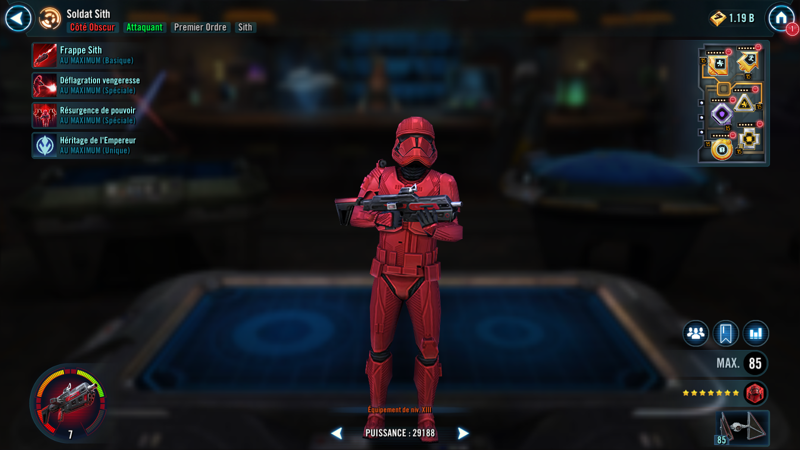
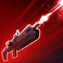
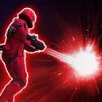
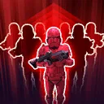

Sith Trooper
Elite trooper with powerful First Order and Sith synergy and high damage potential.

Elite trooper with powerful First Order and Sith synergy and high damage potential.


Deal Physical damage to target enemy. If this attack is a critical hit, Sith Trooper gains Critical Hit Immunity for 2 turns.

Deal Physical damage to all enemies. This attack deals 50% more damage for each currently defeated First Order or Sith ally.

Dispel all debuffs on all First Order and Sith allies and grant them Advantage for 2 turns. If Sith Trooper already had Advantage, he is called to assist.
At the start of battle, Sith Trooper gains Advantage for 2 turns if the Leader is First Order or Sith. While Sith Trooper has Advantage, he has +50% Critical Damage.
Whenever another First Order or Sith ally scores a critical hit or Stuns an enemy, Sith Trooper is called to assist (limit once per turn).
Whenever another First Order or Sith ally is defeated, the cooldown of Vengeant Blast is reset, then Sith Trooper gains Advantage for 1 turn and takes a bonus turn.